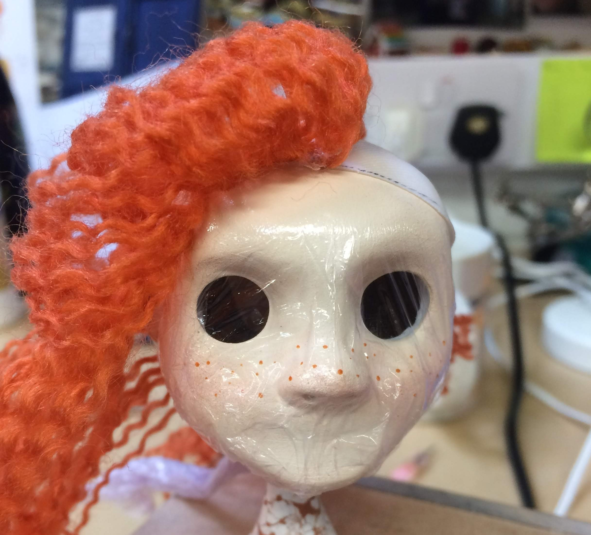

Instructions
| 1. First you are going to want to draw out what you want your puppet to look like. It could be anything, like a human, a dog, or even a dragon | |
| 2. Once you are done with that, you are going to want to draw a big enongh version of your puppet because you need to be able to fit your armature in your drawing. So you can where everything is going to be. You might have to ajust the size of your armature's arms, legs and waist according to what size you want your puppet. |  |
| 3. When makeing the armature you will need to know the right measurements of you puppet and you will be using these materials. ------------------>
note: you could also just buy a kit online to make an armature. Unless it is something very elaborate like a dragon. A little demonstration of how to make a homemade armature. |
 |
Lets say you already have the armature ready to go and it is time to start molding the actually puppet.
| 4. You are going to mold your head, hands and feet using the molding clay. | |
| 5. Then you are going to bake the clay at the right temperture. (Fimo polymer clay cooks at 230 degrees Fahrenheit. 15 minutes per quarter inch.) | |
| 6. Once those are cooked you are going make a container for the mold usinging anything strong enough to hold the mold (legos are good to use). | |
| 7. Then you are going to put clay in the container, but only fill it half way and put your head in the clay. create notches in clay so the mold will be able fit together and a hole (so you can pour the Silicon in to create a copy of the head). repeat with hands and feet. | |
| 8. Next you are going to fill the rest of the container with liquid silicon rubber to create the first half of the mold. let it dry it might take awhile. | |
| 9. Once it is dry take out the clay and clean the first half of the mold. Leave head in mold. | |
| 10. Next you are going to want ot grease up the first half so it wont stick together. | |
| 11. Now fill up the second half of container with liquid silicon rubber. Let dry. |  |
| 12. When it is completely dry take the mold out of the container and take out the head, hands or feet. Wash the mold. | |
| 13. tape or tie the mold together | |
| 14. Now for the head and the feet only pour liquid silicon plastic(not rubber) into hole of the mold and let the silicon dry. (It might take acouple of days to dry) Also make sure to grease up the mold so it wont stick. | |
| 15. For the hands put in your wire hands in the mold and pour in the silicon rubber(not silicon plastic). if you us the plastic, you will not be able to move the hands fingers. Let it dry. | |
| 16. Now we are going to work on the body. You are going to wrap the arms, legs and torso of the armature skeleton with masking tape to create the muscles/fat for the puppet. DO NOT wrap the joints on the armature. | |
| 17. Next you are going to make the clothes. Measure the height and width of the armature. | |
 |
18. make the measurements bigger than the actual armature. (make sure there is extra fabric for sewing)draw out the pattern on the fabric and cut it out. |
| 19. Next sew your clothes together. | |
| 20. Once your done sewing turn the clothes inside-out and put them on your armature | |
| 21. Next take your dry head, hands and feet out of there molds. Wash them. | |
| 22.Paint them how you want the and put them on the armature. | |
| 23. For the hair you can use yarn and glue it on to the head. | |
|  | 24. If you want to be more intricate, in the molding process you can make a hole in the back of the head. makeing it so you can make a wig that will fit in that hole. |